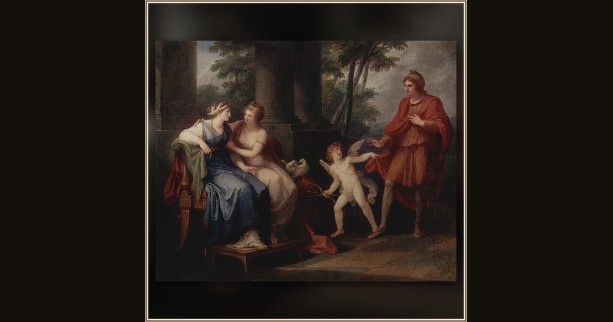

Venus überredet Helena Paris zu erhören (Venus Persuades Helen to Accept Paris)
Angelica Kauffman · 1790 · commons
Seated Helen turns to Venus, who embraces and urges her, while Cupid tugs Paris forward by his cloak; Homer has the goddess set Helen's chair before Alexander (3.424). Explore its place in Homer's Iliad, Book III, line 424.